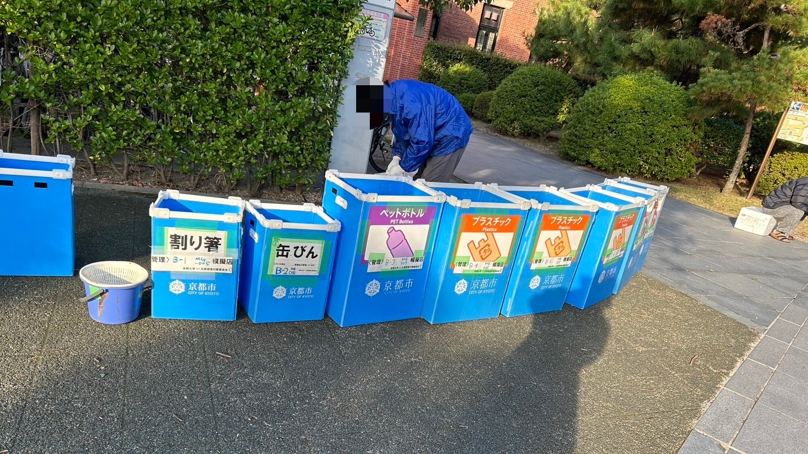
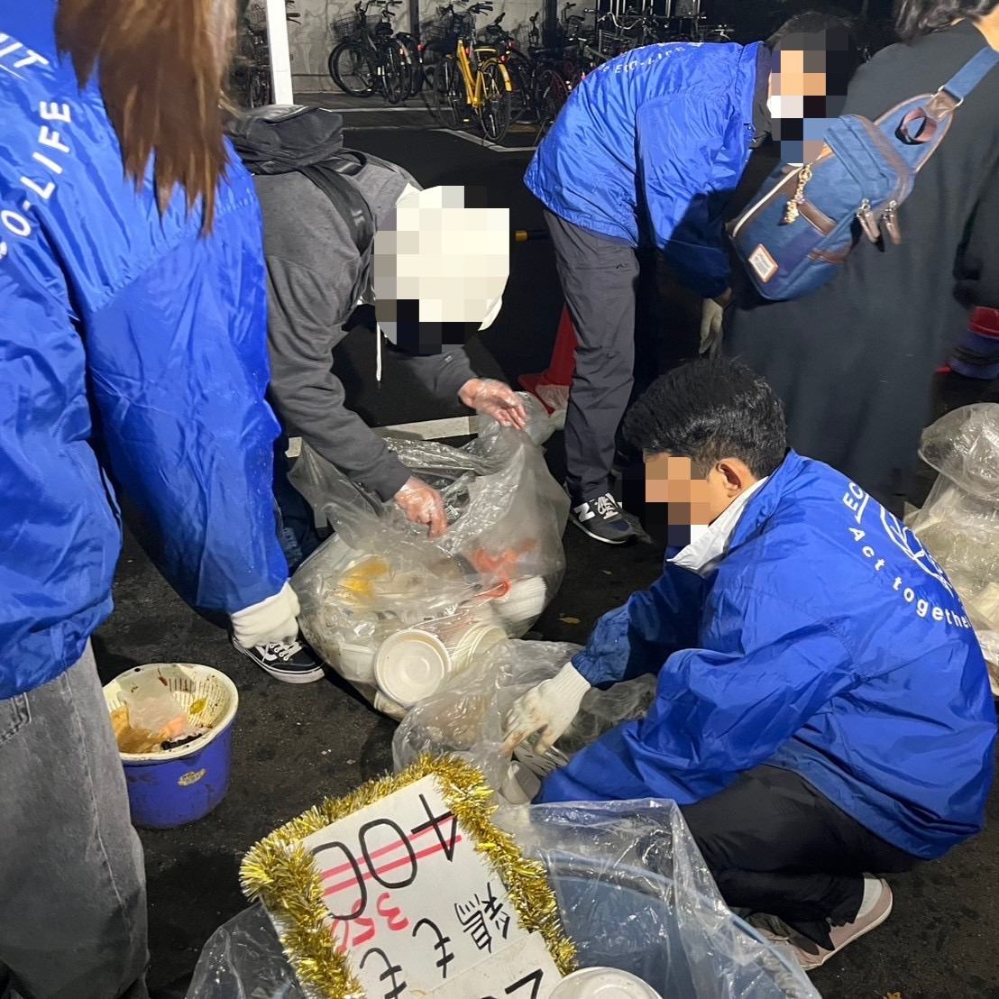
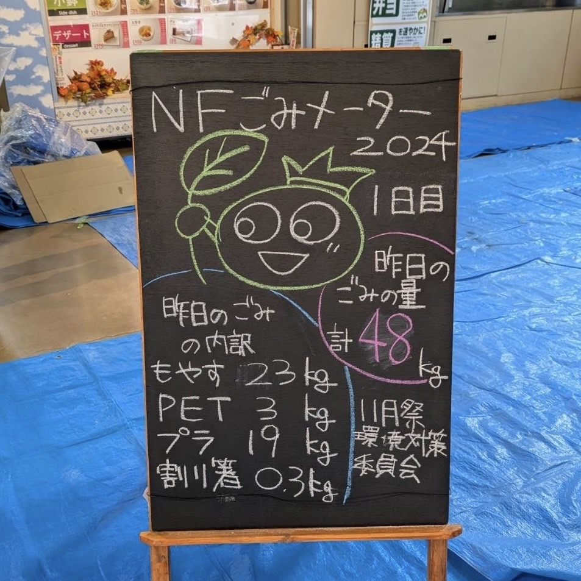

>> 11月祭環境対策委員会とは？
我々は、11月祭事務局と並んで、
11月祭（通称NF）の運営に携わっている公式団体です。
11月祭において発生する、ごみを始めとする多大な環境負荷を少しでも低減すべく活動しています。
>> なぜ11月祭で環境対策が必要なの？
11月祭は、11月祭下旬に4日間続けて行われ、期間中通して約4万人が訪れる関西最大級の学園祭です。
会場として吉田南構内と本部構内のを使用します。建物の外には120もの模擬店が所狭しと立ち並び、
建物の中には学内のサークルを中心とする多くの団体が、講演会・展示発表・演劇など
様々な企画を展開し、多くの来場者で賑わいます。
しかし、このように華やかで大きなお祭りの裏には、忘れてはならない負の側面があります。
それがごみ問題です。規模の大きい11月祭だからこそ、ごみも膨大な量に上ります。
その量はなんと10t(2015年)！たった4日間で排出されるごみとしては破格の量といえます。
これらのごみによる巨大な環境負荷を減らすため、『11月祭での環境対策の必要性』が提唱され、
1993年に11月祭環境対策委員会が発足しました。
>> 具体的な活動内容は？
◇事前準備
準備は、NF開催の数か月前から、お世話になる処理業者さんとの打ち合わせから始まります。 ごみ箱など必要備品の調達、さらには模擬店への説明会など、やること盛りだくさんです。
◇ごみ箱の構築・設営
11月祭において排出される大量のごみは、放っておけばそこら中に放置され、ごみ箱はごみで溢れかえって、 惨憺たる様相を呈す事となります。そのような悲劇を未然に防ぎ、効率よくごみを分別・回収し、 リサイクルに回すため、11月祭の会場内に設置します。これらのごみ箱は1模擬店に1つずつ担当が割り振られ、 模擬店は担当するごみ箱の設置・ごみ袋の交換・撤収等のごみ箱の管理を行ってもらいます。 これは11月祭で排出されるごみの多くが模擬店に由来するものであることからお願いしています。 またごみ集積場での分別徹底の指導なども行っています。
◇集積場での分別補助
模擬店の方々に行ってもらう分別作業を我々もお手伝いします！ 分別種は11種類もあるため、骨の折れる作業です。
◇ごみの計量
11月祭でどの程度のごみが排出されるのかを調査することによって、11月祭のごみについての現状を把握し、 次年度の11月祭環境対策委員会の活動の批判・検討材料とします。
>> 私も環境対策ボランティアとして11月祭に貢献したい！
環対は11月祭期間中、人手不足ということもあり毎日朝8時前から夜遅くまで休みなく活動しています！
そこで、1日数時間からでもボランティアとして協力してくださる方を募集しています！
応募はこちらのページから！